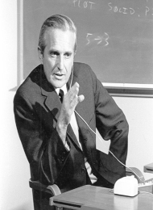
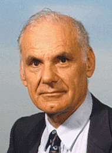

|
 |
.jpg "Robert Metcalfe.html") |
 |
 |
 |
 |  |
Elizabeth (Gilman) és Elliott John Roberts fia volt, mindketten kémiából doktoráltak. A doktori fokozat megszerzése után Roberts tovább dolgozott az MIT Lincoln Laboratóriumában. Roberts 1967 februárjában találkozott Paul Barannel , de nem beszélt a hálózatokról. Megkérte Frank Westerveltet , hogy vizsgálja meg a hálózat kezdeti tervezési kérdéseit.
Roberts elkészített egy javaslatot, amely szerint az összes gazdaszámítógép közvetlenül csatlakozna egymáshoz. Abban az évben az operációs rendszer alapelvei szimpóziumon Roberts bemutatta a Clark üzenetváltási javaslatán alapuló tervet. Ott találkozott Donald Davies csapatának egy tagjával ( Roger Scantlebury ), aki bemutatta a csomagváltással kapcsolatos kutatásaikat, és javasolta az ARPANET-ben való használatát. Roberts terve az ARPANET-re az első nagy kiterjedésű csomagkapcsolós hálózat volt elosztott vezérléssel, hasonlóan Donald Davies 1965-ös tervéhez. Roberts megbízta Howard Frankot, hogy konzultáljon a hálózat topológiai tervezésével kapcsolatban. 1970-ben azt javasolta az NPL Donald Davies-nek, hogy a két szervezet kösse össze hálózatát műholdas kapcsolaton keresztül. Ez az eredeti javaslat kivitelezhetetlennek bizonyult, de 1971-ben Peter Kirstein beleegyezett Roberts javaslatába, hogy inkább a University College Londonhoz (UCL) csatlakoztassa kutatócsoportját. Az UCL összeköttetést biztosított a brit akadémiai hálózatokkal, létrehozva az első nemzetközi erőforrás-megosztó hálózatot. Roberts 1973-ban javasolta, hogy egy műhold 64 kilobit/másodperc sebességű összeköttetését a nyaláb lábnyomán belül több műholdas földi állomás által megosztott médiumként lehessen használni. Ezt később Bob Kahn valósította meg , és ennek eredménye a SATNET.
Roberts az 1970-es évek elején megkereste az AT&T-t az ARPANET átvételével, hogy nyilvános csomagkapcsolt szolgáltatást kínáljon, de ők ezt elutasították. 1973-ban Roberts elhagyta az ARPA-t, hogy csatlakozzon a BBN-nek a születőben lévő csomagkapcsolási technológia kereskedelmi forgalomba hozatalára tett erőfeszítéseihez a Telenet formájában, amely az első FCC-licenccel rendelkező nyilvános adathálózat az Egyesült Államokban. 1973 és 1980 között a vezérigazgatója volt. A Telenet átállt az X.25 protokollra, amelyet a PTT-k Észak-Amerikában és Európában átvettek nyilvános adathálózatokhoz az 1970-es évek közepén, végén. Roberts ezt a megközelítést népszerűsítette az ARPA által alkalmazott TCP/IP- ben alkalmazott datagram- megközelítéssel szemben , amelyet 1978-ban "túladottnak" minősített. 1983-ban csatlakozott a DHL Corporation elnöki posztjához.
1983 és 1993 között a NetExpress, egy aszinkron átviteli móddal (ATM) berendezéssel foglalkozó vállalat vezérigazgatója volt. Roberts 1993 és 1998 között az ATM Systems elnöke volt. 2012 szeptembere óta a Netmax vezérigazgatója volt a kaliforniai Redwood Cityben.